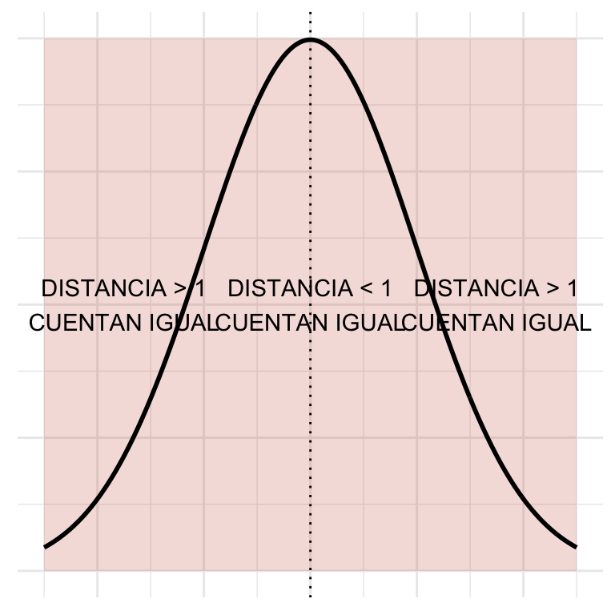
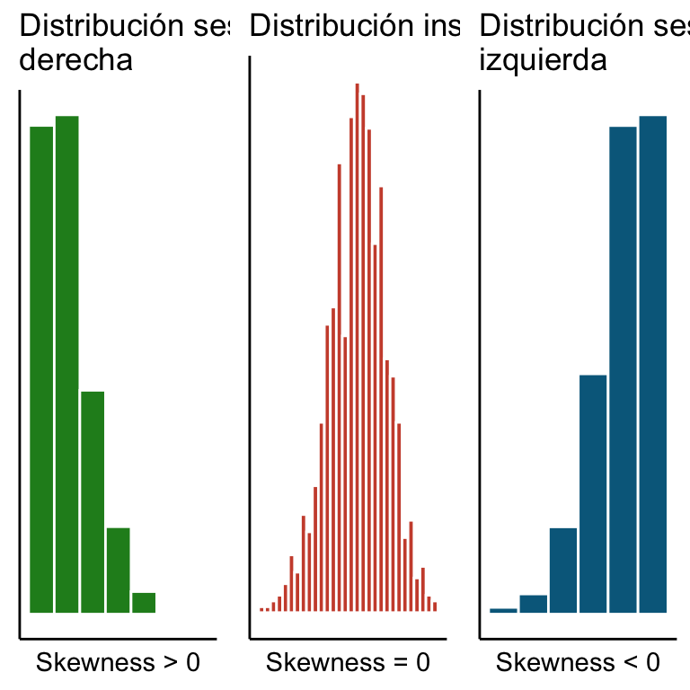

Capítulo 8 A tibble: 1 x 4
mean(n) sum(n) var(n) mad(n, center = mean(n))
La MAD también es una forma de medir distancia pero en este caso se tiene que todos aportan por igual los muy alejados y los que no:

Para pensarle: En el caso de una variable que se supone que es uniforme y no interesa penalizar valores lejanos de la media ¿cuál sería una mejor manera de cuantificar la dispersión MAD ó varianza? ¿en qué casos importaría la otra?
Las siguientes dos definiciones son con base en conceptos de proba. ¿Los recuerdas?
5. Coeficiente de asimetría Dado un vector de datos numéricos \(\vec{x} = (x_1, x_2, \dots, x_n)^T\) definimos el coeficiente de asimetría de Fisher (skewness) como: \[ \text{Skewness}_{\vec{x}} = \frac{1}{n \sigma^3_{\vec{x}} } \sum\limits_{i = 1}^{n} (x_i - \bar{x})^3 \]
Para más referencias ver Panaretos (2016). A fin de interpretar el coeficiente de asimetría podemos dividir esa suma en dos pedazos (olvidándonos de la constante): \[ \sum\limits_{i = 1}^{n} (x_i - \bar{x})^3 = \underbrace{\sum\limits_{\substack{i = 1 \\ \\ x_i > \bar{x}}}^{n} (x_i - \bar{x})^3}_{\text{A}} + \underbrace{\sum\limits_{\substack{i = 1 \\ \\ x_i < \bar{x}}}^{n} (x_i - \bar{x})^3}_{\text{B}} \] Notamos que si \(|A| > |B|\) la mayor parte de las \(x_i\) (o las que se alejan más de la media) son mayores a \(\bar{x}\) y por tanto los datos van a estar sesgados a la derecha:. Por otro lado si \(|B| > |A|\) significa que hay más \(x_i\) (o con mayor peso) del lado izquierdo de la media que del lado derecho de la misma y por tanto los datos están sesgados a la izquierda. Datos insesgados son aquellos donde \(\text{Skewness}_{\vec{x}} = 0\).
 En el caso de las carpetas podemos calcular la asimetría que no se encuentra preprogramada en R como sigue:
#Estimación de la desviación estándar
desv.est <- sd(conteo_delitos$n)
#Estimación del x barra
x.barra <- mean(conteo_delitos$n)
#Obtención de la n (longitud del vector)
n.longitud <- length(conteo_delitos$n)
#Cálculo de la asimetría
(1/desv.est^3)*mean((conteo_delitos$n - x.barra)^3)[1] -0.452821
¿Qué implica el resultado anterior?
6. Curtosis Dado el mismo vector \(\vec{x}\) que en el enunciado anterior el coeficiente de curtosis se define como
\[ \text{Curtosis}_{\vec{x}} = \frac{1}{n \sigma^4_{\vec{x}} } \sum\limits_{i = 1}^{n} (x_i - \bar{x})^4 \]
La interpretación de la curtosis es similar a la que hicimos de la varianza en el sentido que el elevar a la cuarta va a magnificar los efectos de aquellos valores que estén a más de \(\sigma\) de distancia de la media pues podemos reescribir la suma como:
\[
\frac{1}{n \sigma^4_{\vec{x}} } \sum\limits_{i = 1}^{n} (x_i - \bar{x})^4 = \frac{1}{n \sigma^4_{\vec{x}} } \underbrace{\sum\limits_{\substack{i = 1 \\ \\ | x_i - \bar{x}| < \sigma}}^{n} (x_i - \bar{x})^4}_{\text{A}} + \frac{1}{n \sigma^4_{\vec{x}} } \underbrace{\sum\limits_{\substack{i = 1 \\ \\ | x_i - \bar{x}| > \sigma}}^{n} (x_i - \bar{x})^4}_{\text{B}}
\]
Notamos que la única parte importante que apota a la curtosis es la dada por B que es la que capta las colas de la distribución (pues ese lado es \(\gg 1\)) . De ahí que podamos decir que, entre dos vectores de datos, uno tiene colas más pesadas que el otro si su curtosis es mayor. En este caso podemos analizar la latitud y longitud de los datos a través de la curtosis:
kurtosis(latitud, na.rm = T) kurtosis(longitud, na.rm = T)
1 2.85793 3.04504
donde se agregó el comando na.rm = T para eliminar los valores de no respuesta (missing) marcados como NA. Del análisis notamos que la longitud tiene colas más pesadas que la latitud.
NOTACIÓN Dado un vector \(\vec{x} = (x_1, x_2, \dots, x_n)^T\) de valores numéricos denotamos el \(j\)-ésimo valor muestral (\(1 \leq j \leq n\)) como \(x_{(j)}\) tal que \(x_{(1)} = \min \{ x_1, x_2, \dots, x_n \}\) y \[ x_{(j)} = \min \{ x_1, x_2, \dots, x_n \} \setminus \{ x_{(1)}, x_{(2)}, \dots, x_{(j-1)} \} \] Es decir \(x_{(j)}\) es el valor en orden \(j\) al momento de ordenar la muestra. Como nota adicional se define \(x_{(0)} = 0\) y \(x_{(n+1)} = 0\).
Nota La curtosis a veces se define con un denominador distinto (en términos de las \(n\)) como en Myatt and Johnson (2007).
7. Mediana Dado un vector de valores numéricos \(\vec{x} = (x_1, x_2, \dots, x_n)^T\) definimos la mediana como (Panaretos (2016)): \[ \text{Mediana}_{\vec{x}} = \dfrac{x_{(\lfloor \frac{n+1}{2} \rfloor)} + x_{(\lceil \frac{n+1}{2} \rceil)}}{2} \] La mediana puede calcularse fácilmente haciendo:
[1] 646
8. Cuantil Dado un vector de valores numéricos \(\vec{x} = (x_1, x_2, \dots, x_n)^T\) el \(\alpha\)-ésimo cuantil está dado por:
\[
\text{Cuantil}_{\vec{x}}(\alpha) = \dfrac{x_{(\lfloor \alpha\cdot (n+1) \rfloor)} + x_{(\lceil \alpha\cdot (n+1)\rceil)}}{2}
\]
donde \(x_{(0)} = x_{(n+1)} = 0\). R no calcula los cuantiles de manera exacta sino que por velocidad los aproxima mediante la función quantile. Por ejemplo en el cálculo de los cuantiles \(\alpha = 0.1\) y \(\alpha = 0.66\):
Referencias
Myatt, Glenn J, and Wayne P Johnson. 2007. Making Sense of Data. Wiley Online Library.
Panaretos, Victor M. 2016. “Statistics for Mathematicians.” Compact Textbook in Mathematics. Birkhäuser/Springer 142: 9–15.